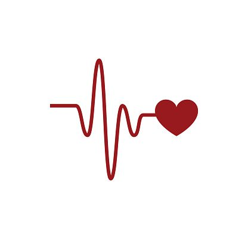
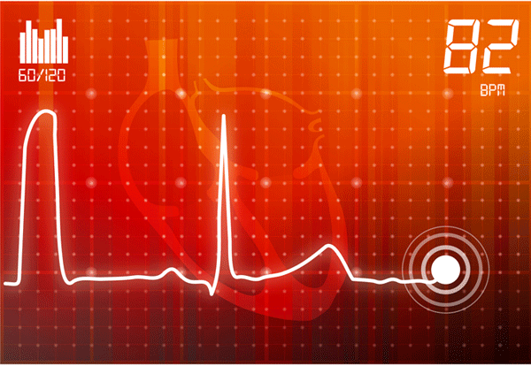

Your doctor may suggest you get an electrocardiogram (also called an EKG or ECG) to check for signs of heart disease. It's a test that records the electrical activity of your ticker through small electrode patches that a technician attaches to the skin of your chest, arms, and legs.
EKGs are quick, safe, and painless. With this test, your doctor will be able to:
- Check your heart rhythm
- See if you have poor blood flow to your heart muscle (this is called ischemia)
- Diagnose a heart attack
- Check on things that are abnormal, such as thickened heart muscle

What Happens During an Electrocardiogram?
A technician will attach 10 electrodes with adhesive pads to the skin of your chest, arms, and legs. If you're a guy, you may need to have your chest hair shaved to allow a better connection. During the test you'll lie flat while a computer creates a picture, on graph paper, of the electrical impulses that move through your heart. This is called a "resting" EKG, although the same test may be used to check your heart while you exercise. It takes about 10 minutes to attach the electrodes and complete the test, but the actual recording takes only a few seconds. Your doctor will keep your EKG patterns on file so that he can compare them to tests you get in the future.
Event monitor. Your doctor may suggest this device if you only get symptoms now and then. When you push a button, it will record and store your heart's electrical activity for a few minutes. You may need to wear it for weeks or sometimes months.
Each time you notice symptoms, you should try to get a reading on the monitor. The info is sent on the phone to your doctor, who will analyze it.
Signal-averaged electrocardiogram. It checks to see if you're at high risk of getting a condition called heart arrhythmia, which can lead to cardiac arrest. The test is done in a similar way as a standard EKG, but it uses sophisticated technology to analyze your risk.
